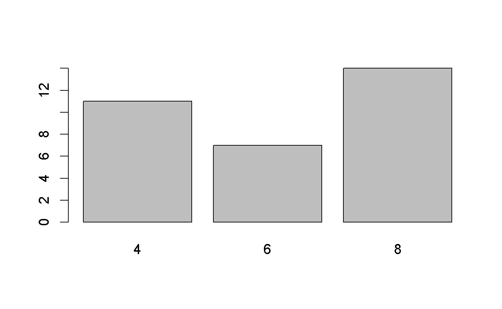
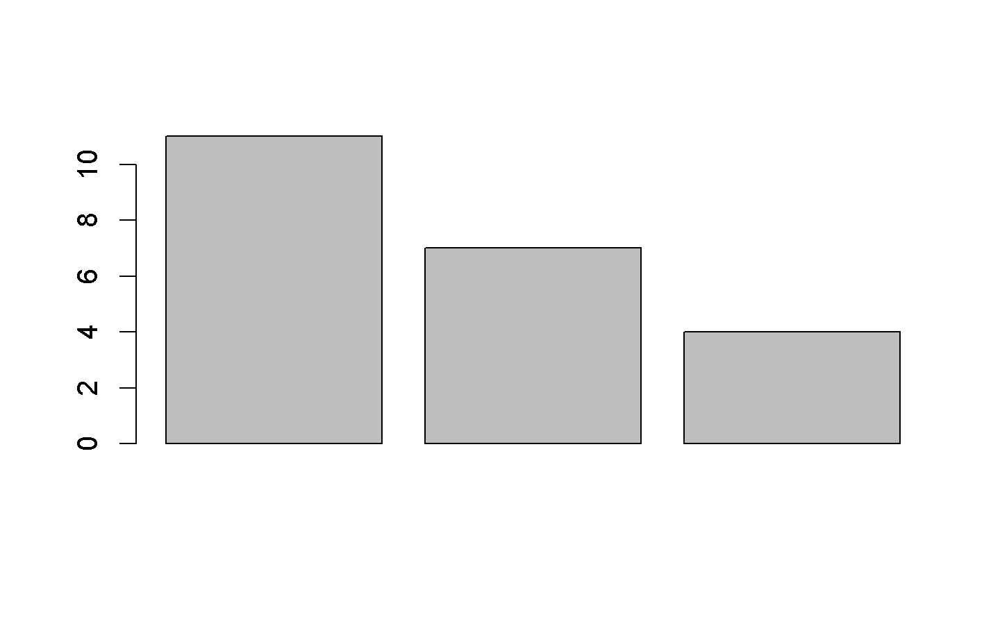
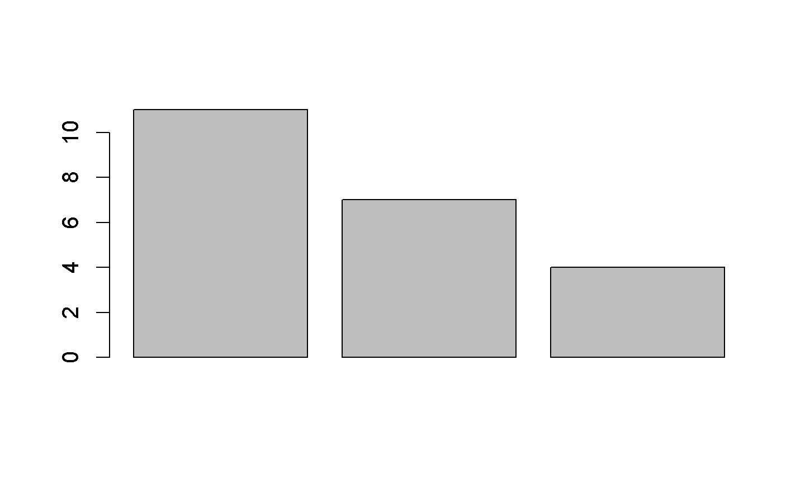

test for class
lend jwj cen
2018-10-30
Chapter 1 網路資源
1.1 quick view
測試資料
可以先看看資料描述 ?mtcars
mpg cyl disp hp drat wt qsec vs am gear carb
Mazda RX4 21.0 6 160.0 110 3.90 2.62 16.5 0 1 4 4
Mazda RX4 Wag 21.0 6 160.0 110 3.90 2.88 17.0 0 1 4 4
Datsun 710 22.8 4 108.0 93 3.85 2.32 18.6 1 1 4 1
Hornet 4 Drive 21.4 6 258.0 110 3.08 3.21 19.4 1 0 3 1
Hornet Sportabout 18.7 8 360.0 175 3.15 3.44 17.0 0 0 3 2
Valiant 18.1 6 225.0 105 2.76 3.46 20.2 1 0 3 1
Duster 360 14.3 8 360.0 245 3.21 3.57 15.8 0 0 3 4
Merc 240D 24.4 4 146.7 62 3.69 3.19 20.0 1 0 4 2
Merc 230 22.8 4 140.8 95 3.92 3.15 22.9 1 0 4 2
Merc 280 19.2 6 167.6 123 3.92 3.44 18.3 1 0 4 4
Merc 280C 17.8 6 167.6 123 3.92 3.44 18.9 1 0 4 4
Merc 450SE 16.4 8 275.8 180 3.07 4.07 17.4 0 0 3 3
Merc 450SL 17.3 8 275.8 180 3.07 3.73 17.6 0 0 3 3
Merc 450SLC 15.2 8 275.8 180 3.07 3.78 18.0 0 0 3 3
Cadillac Fleetwood 10.4 8 472.0 205 2.93 5.25 18.0 0 0 3 4
Lincoln Continental 10.4 8 460.0 215 3.00 5.42 17.8 0 0 3 4
Chrysler Imperial 14.7 8 440.0 230 3.23 5.34 17.4 0 0 3 4
Fiat 128 32.4 4 78.7 66 4.08 2.20 19.5 1 1 4 1
Honda Civic 30.4 4 75.7 52 4.93 1.61 18.5 1 1 4 2
Toyota Corolla 33.9 4 71.1 65 4.22 1.83 19.9 1 1 4 1
Toyota Corona 21.5 4 120.1 97 3.70 2.46 20.0 1 0 3 1
Dodge Challenger 15.5 8 318.0 150 2.76 3.52 16.9 0 0 3 2
AMC Javelin 15.2 8 304.0 150 3.15 3.44 17.3 0 0 3 2
Camaro Z28 13.3 8 350.0 245 3.73 3.84 15.4 0 0 3 4
Pontiac Firebird 19.2 8 400.0 175 3.08 3.85 17.1 0 0 3 2
Fiat X1-9 27.3 4 79.0 66 4.08 1.94 18.9 1 1 4 1
Porsche 914-2 26.0 4 120.3 91 4.43 2.14 16.7 0 1 5 2
Lotus Europa 30.4 4 95.1 113 3.77 1.51 16.9 1 1 5 2
Ford Pantera L 15.8 8 351.0 264 4.22 3.17 14.5 0 1 5 4
Ferrari Dino 19.7 6 145.0 175 3.62 2.77 15.5 0 1 5 6
Maserati Bora 15.0 8 301.0 335 3.54 3.57 14.6 0 1 5 8
Volvo 142E 21.4 4 121.0 109 4.11 2.78 18.6 1 1 4 2
mpg cyl disp hp drat wt qsec vs am gear carb
Mazda RX4 21.0 6 160 110 3.90 2.62 16.5 0 1 4 4
Mazda RX4 Wag 21.0 6 160 110 3.90 2.88 17.0 0 1 4 4
Datsun 710 22.8 4 108 93 3.85 2.32 18.6 1 1 4 1
Hornet 4 Drive 21.4 6 258 110 3.08 3.21 19.4 1 0 3 1
Hornet Sportabout 18.7 8 360 175 3.15 3.44 17.0 0 0 3 2
Valiant 18.1 6 225 105 2.76 3.46 20.2 1 0 3 1
mpg cyl disp hp drat wt qsec vs am gear carb
Porsche 914-2 26.0 4 120.3 91 4.43 2.14 16.7 0 1 5 2
Lotus Europa 30.4 4 95.1 113 3.77 1.51 16.9 1 1 5 2
Ford Pantera L 15.8 8 351.0 264 4.22 3.17 14.5 0 1 5 4
Ferrari Dino 19.7 6 145.0 175 3.62 2.77 15.5 0 1 5 6
Maserati Bora 15.0 8 301.0 335 3.54 3.57 14.6 0 1 5 8
Volvo 142E 21.4 4 121.0 109 4.11 2.78 18.6 1 1 4 2
1.1.1 編輯/瀏覽資料
1.1.2 個別欄位
如果要顯示個別欄位,一般可以是mtcars$mpg,但是如果要直接使用mpg欄位,可以利用attach()
[1] 21.0 21.0 22.8 21.4 18.7 18.1 14.3 24.4 22.8 19.2 17.8 16.4 17.3 15.2
[15] 10.4 10.4 14.7 32.4 30.4 33.9 21.5 15.5 15.2 13.3 19.2 27.3 26.0 30.4
[29] 15.8 19.7 15.0 21.4
1.1.3 質性數據的分析
欄位cyl為質性變數,可以利用table分析
4 6 8
11 7 14
頻率圖

v<-as.vector(table(mtcars$cyl))
barplot(v)
m<-as.matrix(table(mtcars$cyl))
barplot(m)
barplot(c(11,7,4)) 
